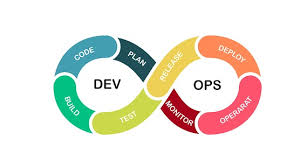

Raghav`s Blog - A Blog For DevOps Engineers
Welcome to my blog! I've just started, but I'll be adding more content soon, including open positions, tech topics, general discussions, industry trends, and more. Stay tuned!

Freelancing Projects in DevOps
We have a team of skilled engineers who take up freelancing projects in the area of DevOps. Whether you need long-term or short-term engagement, our experts are ready to assist. With diverse skill sets and extensive experience, our engineers can handle various aspects of DevOps, ensuring high-quality and efficient solutions for your needs.
Read more →
Preparing for a DevOps Interview: The Realities and Challenges
People often ask me, "How do I prepare for a DevOps interview?" They expect tips to clear the interview, insights into the kinds of questions to expect, and which technologies to focus on..
Read more →
The Future of Work: Balancing AI and Human Roles
The integration of AI into our lives presents a paradox of progress and peril. To navigate this complex landscape, a thoughtful approach is required—one that values human contribution while leveraging AI's capabilities. By fostering a collaborative environment between humans and machines, we can achieve a future where technology enhances our lives without compromising our humanity.
Read more →

The cloud native control plane framework icon
I've been exploring Crossplane for some time now, and it has some pretty cool features. One of its standout aspects is the ability to build control planes without needing to write code. Crossplane boasts a highly extensible backend that enables you to orchestrate applications and infrastructure regardless of where they run. Additionally, it offers a highly configurable frontend that lets you define the declarative API it offers, making it a powerful tool for managing diverse environments.
Read more →
CNCF Landscape
Why did the DevOps engineer get lost in the CNCF Landscape? Because every time they found a tool they liked, ten more they’d never heard of appeared! The landscape is constantly evolving, reflecting the rapid pace of innovation in the cloud native world. So, buckle up and enjoy the ride through the CNCF Cloud Native Landscape. It's a journey filled with learning, discovery, and endless possibilities!
Read more →

An open-source Kubernetes security platform for your IDE, CI/CD pipelines, and clusters
Kubescape is an open-source Kubernetes security platform. It includes risk analysis, security compliance, and misconfiguration scanning. Targeted at the DevSecOps practitioner or platform engineer, it offers an easy-to-use CLI interface, flexible output formats, and automated scanning capabilities. It saves Kubernetes users and admins precious time, effort, and resources.
Read more →

Protect Your Code: Restrict Changes to Individual Files with GitHub Rulesets
Rulesets help you to control how people can interact with branches and tags in a repository.
Read more →